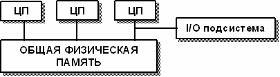
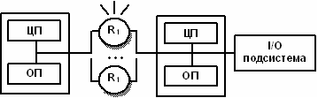
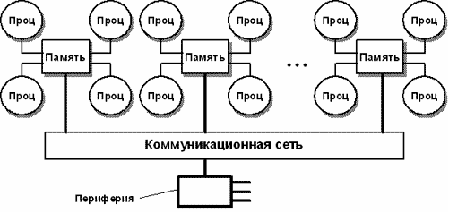
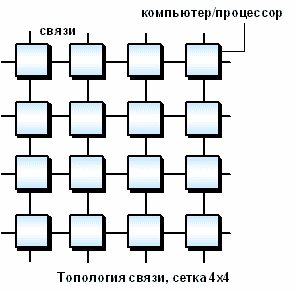
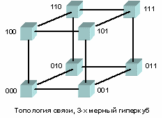
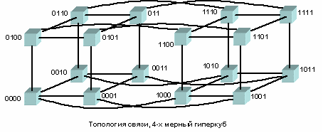

Чтобы дать более полное представление о многопроцессорных вычислительных системах, помимо высокой производительности необходимо назвать и другие отличительные особенности. Прежде всего, это необычные архитектурные решения, направленные на повышение производительности (работа с векторными операциями, организация быстрого обмена сообщениями между процессорами или организация глобальной памяти в многопроцессорных системах и др.).
Понятие архитектуры высокопроизводительной системы является достаточно широким, поскольку под архитектурой можно понимать и способ параллельной обработки данных, используемый в системе, и организацию памяти, и топологию связи между процессорами, и способ исполнения системой арифметических операций. Попытки систематизировать все множество архитектур начались в конце 60-х годов и непрерывно продолжаются по сей день.
В 1966 году М.Флинном (Flynn) был предложен чрезвычайно удобный подход к классификации архитектур вычислительных систем. В основу было положено понятие потока, под которым понимается последовательность элементов, команд или данных, обрабатываемая процессором. Соответствующая система классификации основана на рассмотрении числа потоков инструкций и потоков данных и описывает четыре архитектурных класса:
SISD = Single Instruction Single Data
MISD = Multiple Instruction Single Data
SIMD = Single Instruction Multiple Data
MIMD = Multiple Instruction Multiple Data
SISD (single instruction stream / single data stream) - одиночный поток команд и одиночный поток данных. К этому классу относятся последовательные компьютерные системы, которые имеют один центральный процессор, способный обрабатывать только один поток последовательно исполняемых инструкций. В настоящее время практически все высокопроизводительные системы имеют более одного центрального процессора, однако, каждый из них выполняют несвязанные потоки инструкций, что делает такие системы комплексами SIMD-систем, действующих на разных пространствах данных. Для увеличения скорости обработки команд и скорости выполнения арифметических операций может применяться конвейерная обработка. В случае векторных систем векторный поток данных следует рассматривать как поток из одиночных неделимых векторов. Примерами компьютеров с архитектурой SISD является большинство рабочих станций Compaq, Hewlett-Packard и Sun Microsystems.
MISD (multiple instruction stream / single data stream) - множественный поток команд и одиночный поток данных. Теоретически в этом типе машин множество инструкций должно выполняться над единственным потоком данных. До сих пор ни одной реальной машины, попадающей в данный класс, не было создано. В качестве аналога работы такой системы, по-видимому, можно рассматривать работу банка. С любого терминала можно подать команду и что-то сделать с имеющимся банком данных. Поскольку база данных одна, а команд много, то мы имеем дело с множественным потоком команд и одиночным потоком данных.
SIMD (single instruction stream / multiple data stream) - одиночный поток команд и множественный поток данных. Эти системы обычно имеют большое количество процессоров, в пределах от 1024 до 16384, которые могут выполнять одну и ту же инструкцию относительно разных данных в жесткой конфигурации. Единственная инструкция параллельно выполняется над многими элементами данных. Примерами SIMD машин являются системы CPP DAP, Gamma II и Quadrics Apemille. Другим подклассом SIMD-систем являются векторные компьютеры. Векторные компьютеры манипулируют массивами сходных данных подобно тому, как скалярные машины обрабатывают отдельные элементы таких массивов. Это делается за счет использования специально сконструированных векторных центральных процессоров. Когда данные обрабатываются посредством векторных модулей, результаты могут быть выданы на один, два или три такта частотогенератора (такт частотогенератора является основным временным параметром системы). При работе в векторном режиме векторные процессоры обрабатывают данные практически параллельно, что делает их в несколько раз более быстрыми, чем при работе в скалярном режиме. Примерами систем подобного типа является, например, компьютеры Hitachi S3600.
MIMD (multiple instruction stream / multiple data stream) - множественный поток команд и множественный поток данных. Эти машины параллельно выполняют несколько потоков инструкций над различными потоками данных. В отличие от многопроцессорных SISD-машин, упомянутых выше, команды и данные связаны, потому что они представляют различные части одной и той же выполняемой задачи. Например, MIMD-системы могут параллельно выполнять множество подзадач, с целью сокращения времени выполнения основной задачи. Наличие большого разнообразия попадающих в данный класс систем, делает классификацию Флинна не полностью адекватной. Действительно и четырехпроцессорный SX-5 компании NEC и тысячепроцессорный Cray T3E оба попадают в этот класс. Это заставляет использовать другой подход к классификации, иначе описывающий классы компьютерных систем. Основная идея такого подхода может состоять, например, в следующем. Считаем, что множественный поток команд может быть обработан двумя способами: либо одним конвейерным устройством обработки, работающем в режиме разделения времени для отдельных потоков, либо каждый поток обрабатывается своим собственным устройством. Первая возможность используется в MIMD компьютерах, которые обычно называют конвейерными или векторными, вторая – в параллельных компьютерах. В основе векторных компьютеров лежит концепция конвейеризации, т.е. явного сегментирования арифметического устройства на отдельные части, каждая из которых выполняет свою подзадачу для пары операндов. В основе параллельного компьютера лежит идея использования для решения одной задачи нескольких процессоров, работающих сообща, причем процессоры могут быть как скалярными, так и векторными.
SMP архитектура
SMP архитектура (symmetric multiprocessing) - симметричная многопроцессорная архитектура. Главной особенностью систем с архитектурой SMP является наличие общей физической памяти, разделяемой всеми процессорами.

Рис. 10.1. Схематический вид SMP-архитектуры.
Память является способом передачи сообщений между процессорами, при этом все вычислительные устройства при обращении к ней имеют равные права и одну и ту же адресацию для всех ячеек памяти. Поэтому SMP архитектура называется симметричной. Последнее обстоятельство позволяет очень эффективно обмениваться данными с другими вычислительными устройствами. SMP-система строится на основе высокоскоростной системной шины (SGI PowerPath, Sun Gigaplane, DEC TurboLaser), к слотам которой подключаются функциональные блоки трех типов: процессоры (ЦП), операционная система (ОП) и подсистема ввода/вывода (I/O). Для подсоединения к модулям I/O используются уже более медленные шины (PCI, VME64). Наиболее известными SMP-системами являются SMP-серверы и рабочие станции на базе процессоров Intel (IBM, HP, Compaq, Dell, ALR, Unisys, DG, Fujitsu и др.) Вся система работает под управлением единой ОС (обычно UNIX-подобной, но для Intel-платформ поддерживается Windows NT). ОС автоматически (в процессе работы) распределяет процессы по процессорам, но иногда возможна и явная привязка.
Основные преимущества SMP-систем:
Недостатки:
MPP архитектура
MPP архитектура (massive parallel processing) - массивно-параллельная архитектура. Главная особенность такой архитектуры состоит в том, что память физически разделена. В этом случае система строится из отдельных модулей, содержащих процессор, локальный банк операционной памяти (ОП), два коммуникационных процессора (рутера) или сетевой адаптер, иногда - жесткие диски и/или другие устройства ввода/вывода. Один рутер используется для передачи команд, другой - для передачи данных. По сути, такие модули представляют собой полнофункциональные компьютеры (см. рис.). Доступ к банку ОП из данного модуля имеют только процессоры (ЦП) из этого же модуля. Модули соединяются специальными коммуникационными каналами. Пользователь может определить логический номер процессора, к которому он подключен, и организовать обмен сообщениями с другими процессорами. Используются два варианта работы операционной системы (ОС) на машинах MPP архитектуры. В одном полноценная операционная система (ОС) работает только на управляющей машине (front-end), на каждом отдельном модуле работает сильно урезанный вариант ОС, обеспечивающий работу только расположенной в нем ветви параллельного приложения. Во втором варианте на каждом модуле работает полноценная UNIX-подобная ОС, устанавливаемая отдельно на каждом модуле.

Рис. 10.2. Схематический вид архитектуры с раздельной памятью
Главное преимущество:
Главным преимуществом систем с раздельной памятью является хорошая масштабируемость: в отличие от SMP-систем в машинах с раздельной памятью каждый процессор имеет доступ только к своей локальной памяти, в связи с чем не возникает необходимости в потактовой синхронизации процессоров. Практически все рекорды по производительности на сегодняшний день устанавливаются на машинах именно такой архитектуры, состоящих из нескольких тысяч процессоров (ASCI Red, ASCI Blue Pacific).
Недостатки:
Системами с раздельной памятью являются суперкомпьютеры МВС-1000, IBM RS/6000 SP, SGI/CRAY T3E, системы ASCI, Hitachi SR8000, системы Parsytec.
Машины последней серии CRAY T3E от SGI, основанные на базе процессоров Dec Alpha 21164 с пиковой производительностью 1200 Мфлопс/с (CRAY T3E-1200), способны масштабироваться до 2048 процессоров.
При работе с MPP системами используют так называемую Massive Passing Programming Paradigm - парадигму программирования с передачей данных (MPI, PVM, BSPlib).
Гибридная архитектура (NUMA) Организация когерентности многоуровневой иерархической памяти
Гибридная архитектура NUMA (nonuniform memory access). Главная особенность такой архитектуры - неоднородный доступ к памяти.
Гибридная архитектура воплощает в себе удобства систем с общей памятью и относительную дешевизну систем с раздельной памятью. Суть этой архитектуры - в особой организации памяти, а именно: память является физически распределенной по различным частям системы, но логически разделяемой, так что пользователь видит единое адресное пространство. Система состоит из однородных базовых модулей (плат), состоящих из небольшого числа процессоров и блока памяти. Модули объединены с помощью высокоскоростного коммутатора. Поддерживается единое адресное пространство, аппаратно поддерживается доступ к удаленной памяти, т.е. к памяти других модулей. При этом доступ к локальной памяти осуществляется в несколько раз быстрее, чем к удаленной. По существу архитектура NUMA является MPP (массивно-параллельная архитектура) архитектурой, где в качестве отдельных вычислительных элементов берутся SMP (симметричная многопроцессорная архитектура) узлы.
Структурная схема компьютера с гибридной сетью: четыре процессора связываются между собой при помощи кроссбара в рамках одного SMP узла. Узлы связаны сетью типа "бабочка" (Butterfly):

Рис. 10.3. Структурная схема компьютера с гибридной сетью
Впервые идею гибридной архитектуры предложил Стив Воллох и воплотил в системах серии Exemplar. Вариант Воллоха - система, состоящая из 8-ми SMP узлов. Фирма HP купила идею и реализовала на суперкомпьютерах серии SPP. Идею подхватил Сеймур Крей (Seymour R.Cray) и добавил новый элемент - когерентный кэш, создав так называемую архитектуру cc-NUMA (Cache Coherent Non-Uniform Memory Access), которая расшифровывается как "неоднородный доступ к памяти с обеспечением когерентности кэшей". Он ее реализовал на системах типа Origin.
Организация когерентности многоуровневой иерархической памяти
Понятие когерентности кэшей описывает тот факт, что все центральные процессоры получают одинаковые значения одних и тех же переменных в любой момент времени. Действительно, поскольку кэш-память принадлежит отдельному компьютеру, а не всей многопроцессорной системе в целом, данные, попадающие в кэш одного компьютера, могут быть недоступны другому. Чтобы избежать этого, следует провести синхронизацию информации, хранящейся в кэш-памяти процессоров.
Для обеспечения подобной когерентности кэшей существуют несколько возможностей:
Наиболее известными системами архитектуры cc-NUMA являются: HP 9000 V-class в SCA-конфигурациях, SGI Origin3000, Sun HPC 15000, IBM/Sequent NUMA-Q 2000. На настоящий момент максимальное число процессоров в cc-NUMA-системах может превышать 1000 (серия Origin3000). Обычно вся система работает под управлением единой ОС, как в SMP. Возможны также варианты динамического "подразделения" системы, когда отдельные "разделы" системы работают под управлением разных ОС. При работе NUMA-системами, также как с SMP, используют так называемую парадигму программирования с общей памятью (shared memory paradigm).
PVP архитектура
PVP (Parallel Vector Process) - параллельная архитектура с векторными процессорами.
Основным признаком PVP-систем является наличие специальных векторно-конвейерных процессоров, в которых предусмотрены команды однотипной обработки векторов независимых данных, эффективно выполняющиеся на конвейерных функциональных устройствах. Как правило, несколько таких процессоров (1-16) работают одновременно с общей памятью (аналогично SMP) в рамках многопроцессорных конфигураций. Несколько таких узлов могут быть объединены с помощью коммутатора (аналогично MPP). Поскольку передача данных в векторном формате осуществляется намного быстрее, чем в скалярном (максимальная скорость может составлять 64 Гб/с, что на 2 порядка быстрее, чем в скалярных машинах), то проблема взаимодействия между потоками данных при распараллеливании становится несущественной. И то, что плохо распараллеливается на скалярных машинах, хорошо распараллеливается на векторных. Таким образом, системы PVP архитектуры могут являться машинами общего назначения (general purpose systems). Однако, поскольку векторные процессоры весьма дороги, эти машины не будут являться общедоступными.
Наиболее популярны 3 машины PVP архитектуры:
Парадигма программирования на PVP системах предусматривает векторизацию циклов (для достижения разумной производительности одного процессора) и их распараллеливание (для одновременной загрузки нескольких процессоров одним приложением).
На практике рекомендуют следующие процедуры:
За счет большой физической памяти (доли терабайта), даже плохо векторизуемые задачи на PVP системах решаются быстрее, на системах со скалярными процессорами.
Кластерная архитектура
Кластер представляет собой два или больше компьютеров (часто называемых узлами), объединяемых при помощи сетевых технологий на базе шинной архитектуры или коммутатора и предстающих перед пользователями в качестве единого информационно-вычислительного ресурса. В качестве узлов кластера могут быть выбраны серверы, рабочие станции и даже обычные персональные компьютеры. Преимущество кластеризации для повышения работоспособности становится очевидным в случае сбоя какого-либо узла: при этом другой узел кластера может взять на себя нагрузку неисправного узла, и пользователи не заметят прерывания в доступе. Возможности масштабируемости кластеров позволяют многократно увеличивать производительность приложений для большего числа пользователей технологий (Fast/Gigabit Ethernet, Myrinet) на базе шинной архитектуры или коммутатора. Такие суперкомпьютерные системы являются самыми дешевыми, поскольку собираются на базе стандартных комплектующих элементов ("off the shelf"), процессоров, коммутаторов, дисков и внешних устройств.
Кластеризация может быть осуществлена на разных уровнях компьютерной системы, включая аппаратное обеспечение, операционные системы, программы-утилиты, системы управления и приложения. Чем больше уровней системы объединены кластерной технологией, тем выше надежность, масштабируемость и управляемость кластера.
Типы кластеров
Условное деление на классы предложено Язеком Радаевским и Дугласом Эдлайном:
Как уже указывалось выше, кластеры могут существовать в различных конфигурациях. Наиболее употребляемыми типами кластеров являются:
Отметим, что границы между этими типами кластеров до некоторой степени размыты, и часто существующий кластер может иметь такие свойства или функции, которые выходят за рамки перечисленных типов. Более того, при конфигурировании большого кластера, используемого как система общего назначения, приходится выделять блоки, выполняющие все перечисленные функции.
Кластеры для высокопроизводительных вычислений предназначены для параллельных расчётов. Эти кластеры обычно собраны из большого числа компьютеров. Разработка таких кластеров является сложным процессом, требующим на каждом шаге аккуратных согласований таких вопросов как инсталляция, эксплуатация и одновременное управление большим числом компьютеров, технические требования параллельного и высокопроизводительного доступа к одному и тому же системному файлу (или файлам) и межпроцессорная связь между узлами и координация работы в параллельном режиме. Эти проблемы проще всего решаются при обеспечении единого образа операционной системы для всего кластера. Однако реализовать подобную схему удаётся далеко не всегда и обычно она обычно применяется лишь для не слишком больших систем.
Многопоточные системы используются для обеспечения единого интерфейса к ряду ресурсов, которые могут со временем произвольно наращиваться (или сокращаться) в размере. Наиболее общий пример этого представляет собой группа Веб-серверов.
В 1994 году Томас Стерлинг (Sterling) и Дон Беккер (Becker) создали 16-и узловой кластер из процессоров Intel DX4, соединенных сетью 10Мбит/с Ethernet с дублированием каналов. Они назвали его «Beowulf» по названию старинной эпической поэмы. Кластер возник в центре NASA Goddard Space Flight Center для поддержки необходимыми вычислительными ресурсами проекта Earth and Space Sciences. Проектно-конструкторские работы над кластером быстро превратились в то, что известно сейчас под названием проект Beowulf. Проект стал основой общего подхода к построению параллельных кластерных компьютеров и описывает многопроцессорную архитектуру, которая может с успехом использоваться для параллельных вычислений. Beowulf-кластер, как правило, является системой, состоящей из одного серверного узла (который обычно называется головным узлом), а также одного или нескольких подчинённых узлов (вычислительных узлов), соединённых посредством стандартной компьютерной сети. Система строится с использованием стандартных аппаратных компонент, таких как ПК, запускаемых под Linux, стандартных сетевых адаптеров (например, Ethernet) и коммутаторов. Нет особого программного пакета, называемого «Beowulf». Вместо этого имеется несколько кусков программного обеспечения, которые многие пользователи нашли пригодными для построения кластеров Beowulf. Beowulf использует такие программные продукты как операционную систему Linux, системы передачи сообщений PVM, MPI, системы управления очередями заданий и другие стандартные продукты. Серверный узел контролирует весь кластер и обслуживает файлы, направляемые к клиентским узлам.
Проблемы выполнения сети связи процессоров в кластерной системе.
Архитектура кластерной системы (способ соединения процессоров друг с другом) в большей степени определяет ее производительность, чем тип используемых в ней процессоров. Критическим параметром, влияющим на величину производительности такой системы, является расстояние между процессорами. Так, соединив вместе 10 персональных компьютеров, мы получим систему для проведения высокопроизводительных вычислений, проблема, однако, будет состоять в нахождении наиболее эффективного способа соединения стандартных средств друг с другом, поскольку при увеличении производительности каждого процессора в 10 раз производительность системы в целом в 10 раз не увеличится.
Рассмотрим для примера задачу построения симметричной 16-ти процессорной системы, в которой все процессоры были бы равноправны. Наиболее естественным представляется соединение в виде плоской решетки, где внешние концы используются для подсоединения внешних устройств.

Рис. 10.4. Схема соединения процессоров в виде плоской решетки
При таком типе соединения максимальное расстояние между процессорами окажется равным 6 (количество связей между процессорами, отделяющих самый ближний процессор от самого дальнего). Теория же показывает, что если в системе максимальное расстояние между процессорами больше 4, то такая система не может работать эффективно. Поэтому, при соединении 16 процессоров друг с другом плоская схема является не эффективной. Для получения более компактной конфигурации необходимо решить задачу о нахождении фигуры, имеющей максимальный объем при минимальной площади поверхности. В трехмерном пространстве таким свойством обладает шар. Но поскольку нам необходимо построить узловую систему, то вместо шара приходится использовать куб (если число процессоров равно 8) или гиперкуб, если число процессоров больше 8. Размерность гиперкуба будет определяться в зависимости от числа процессоров, которые необходимо соединить. Так, для соединения 16 процессоров потребуется 4-х мерный гиперкуб. Для его построения следует взять обычный 3-х мерный куб (рис. 10.5), сдвинуть в еще одном направлении и, соединив вершины, получить гиперкуб размером 4 (рис. 10.6).

Рис. 10. 5. Трехмерный гиперкуб

Рис. 10. 6. Четырехмерный гиперкуб
Архитектура гиперкуба является второй по эффективности, но самой наглядной. Используются и другие топологии сетей связи: трехмерный тор, "кольцо", "звезда" и другие.
Поскольку способ соединения процессоров друг с другом больше влияет на производительность кластера, чем тип используемых в ней процессоров, то может оказаться более рентабельным создать систему из большего числа дешевых компьютеров, чем из меньшего числа дорогих. В кластерах, как правило, используются операционные системы, стандартные для рабочих станций, чаще всего, свободно распространяемые - Linux, FreeBSD, вместе со специальными средствами поддержки параллельного программирования и балансировки нагрузки. При работе с кластерами, также как и с MPP системами, используют так называемую Massive Passing Programming Paradigm - парадигму программирования с передачей данных (чаще всего - MPI). Дешевизна подобных систем оборачивается большими накладными расходами на взаимодействие параллельных процессов между собой, что сильно сужает потенциальный класс решаемых задач.